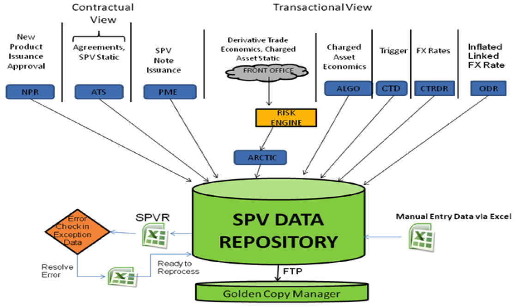

Industry Experience
Bank of America - Merill Lynch

During the Summer of 2010, I worked at Bank of America in Chicago, IL. I was an intern in the Global Middle Office Technology Division developing technology for the trade of Special Purpose Entities in the London office. This business was acquired from Merill Lynch during the merger and therefore needed platform standardization between the two companies. I worked under the project manager to gather business requirements (London) and create a software architecture that would support a data repository collecting information from various existing platforms involved during the trade of an SPE. The idea of this system was to marry the Transactional Data (trade dependent) and the Contractual Data (legal agreement with corresponding company). The repository would then generate a 'Golden Copy' that would be sent to the Back Office as well as serve as a ledger. During my time at the company the project was in the first quarter of its 18 month timeframe that would involve development, testing and deployment. Hence I participated mainly in designing the system by learning the business processes.
General Electric - Healthcare
I worked at General Electric Healthcare over the summer of 2009. My job was to develop tools and applications to support Lean Manufacturing efforts. The greatest accomplishment during this internship was when I successfully achieved close to 95% work order accuracy up for 70%. The project manager is supposed to generate a Work-Order book (WOB) that is sent to the manufacturing line with the specific software details that must be installed on the equipment. This process is audited by the FDA (Food and Drugs Association) and is therefore critical. During to oversight and large amounts of information, frequent errors and mismatch occur in the WOB data. I generated tools that would download the part information from the company database and check with the information in the WOB and correct for any discrepancies. Thereby reducing the manual process.
Additionally I created applications that the operators could use to keep stock of the media being manufactured. It would statistically observe the trends of demand and trigger production warnings accordingly. In Lean terminology it would maintain a Dynamic Kanban by suggesting size of stocked parts incorporating past data.
Caterpillar - Simulation Center
I worked part-time with Caterpillar in their Champaign Simulation Center mostly through my junior year. As part of the design group, I designed, updated and modified CAD models of various parts and assemblies for Caterpillar Dump trucks.